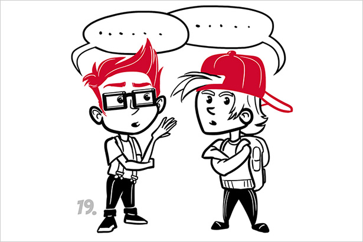
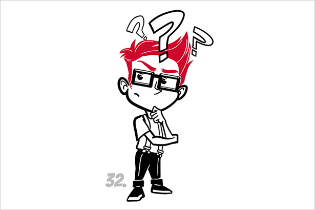

Направи тест
RoboStar
За нас
#Нещополезно
Обяви
Контакти
Вход/регистрация
Открий твоите
#силни страни
Избери едно от двете твърдения, което в по-голяма степен се отнася за теб.
Действам
0
Намирам решение
1
Избери едно от двете твърдения, което в по-голяма степен се отнася за теб.
2
„Сговорна дружина планина повдига“
3
Често ми светва лампичката
Избери едно от двете твърдения, което в по-голяма степен се отнася за теб.
4
Мечтател съм
Общителен съм
5
Избери едно от двете твърдения, което в по-голяма степен се отнася за теб.
6
Харесва ми, когато срещите са добре организирани.
7
Винаги спазвам крайните срокове
Избери едно от двете твърдения, което в по-голяма степен се отнася за теб.
8
„Не оставям днешната работа за утре“
9
„Три пъти мери, един път режи“
Избери едно от двете твърдения, което в по-голяма степен се отнася за теб.
10
Душата на компанията съм
11
Винаги търся нови възможности.
Избери едно от двете твърдения, което в по-голяма степен се отнася за теб.
12
Сам съм си шеф
13
Обичам да правя всичко от игла до конец
Избери едно от двете твърдения, което в по-голяма степен се отнася за теб.
14
Грижа ме е за чувствата на другите
15
Обичам да провокирам и да наблюдавам реакциите на другите
Избери едно от двете твърдения, което в по-голяма степен се отнася за теб.
16
„По дрехите посрещат, а по ума изпращат“
17
„Капка по капка вир прави“
Избери едно от двете твърдения, което в по-голяма степен се отнася за теб.
Комуникативен съм
18

Креативен съм
19
Избери едно от двете твърдения, което в по-голяма степен се отнася за теб.
20
„Къща без основа не се строи“
21
„Другар в нужда се познава“
Избери едно от двете твърдения, което в по-голяма степен се отнася за теб.
Планирам
22
Действам по същество
23
Избери едно от двете твърдения, което в по-голяма степен се отнася за теб.
24
Умея да се справям с напрежението.
25
Съвършенството се постига с практика.
Избери едно от двете твърдения, което в по-голяма степен се отнася за теб.
26
Добър слушател съм.
27
Мисля бързо.
Избери едно от двете твърдения, което в по-голяма степен се отнася за теб.
28
Екипен играч съм.
29
Имам логическо мислене.
Избери едно от двете твърдения, което в по-голяма степен се отнася за теб.
Мултитаскинг
30
Обмислям внимателно
31

Избери едно от двете твърдения, което в по-голяма степен се отнася за теб.
32
Скачайки в дълбокото, уча най-добре.
33
Логика > Емоции.
Избери едно от двете твърдения, което в по-голяма степен се отнася за теб.
34
Хората са като отворена книга за мен.
35
Не обичам детайлите.
Избери едно от двете твърдения, което в по-голяма степен се отнася за теб.
36
Първо анализирам, после действам.
37
Умея да водя работни срещи.
Избери едно от двете твърдения, което в по-голяма степен се отнася за теб.
38
„И утре е ден“.
39
„Казана дума, хвърлен камък“.
Избери едно от двете твърдения, което в по-голяма степен се отнася за теб.
Авантюрист съм.
40
Изследовател съм
41
Избери едно от двете твърдения, което в по-голяма степен се отнася за теб.
42
Открит човек съм.
43
Иновативен съм.
Избери едно от двете твърдения, което в по-голяма степен се отнася за теб.
Обичам да чета.
44
Решавам проблеми.
45
Избери едно от двете твърдения, което в по-голяма степен се отнася за теб.
46
Концентриран/а съм.
47
За мен е важен крайният резултат.
Избери едно от двете твърдения, което в по-голяма степен се отнася за теб.
48
Обичам да опознавам хората.
49
Обичам разнообразието.
Избери едно от двете твърдения, което в по-голяма степен се отнася за теб.
Доверявам се на фактите.
50
Използвам въображението си.
51
Избери едно от двете твърдения, което в по-голяма степен се отнася за теб.
52
Губя търпение при бавни процеси.
53
Имам хиляди мисли в главата си.
Избери едно от двете твърдения, което в по-голяма степен се отнася за теб.
54
Не обичам прибързаните решения.
55
Екипната работа води до прогрес.
Избери едно от двете твърдения, което в по-голяма степен се отнася за теб.
56
Не се замислям два пъти.
57
Не взимам емоционални решения.
Избери едно от двете твърдения, което в по-голяма степен се отнася за теб.
58
Важно ми е да съм харесван.
59
Правя правилните заключения.
Избери едно от двете твърдения, което в по-голяма степен се отнася за теб.
60
Търся странично мнение.
61
Следвам определена методология.
Избери едно от двете твърдения, което в по-голяма степен се отнася за теб.
62
Обичам да свършвам работата.
63
Добрите взаимоотношения са важни.
Избери едно от двете твърдения, което в по-голяма степен се отнася за теб.
64
Импулсивен/импулсивна съм.
65
Широкоскроен/а съм.
Избери едно от двете твърдения, което в по-голяма степен се отнася за теб.
66
„Блага дума железни врати отваря“.
67
Обичам трудните задачи.
Избери едно от двете твърдения, което в по-голяма степен се отнася за теб.
Организиран съм.
68
Скачам от задача на задача
69
Избери едно от двете твърдения, което в по-голяма степен се отнася за теб.
70
Комуникирам без проблем с различни хора.
71
Стремя се към личностно развитие.
Избери едно от двете твърдения, което в по-голяма степен се отнася за теб.
72
Идеен съм.
73
Не обичам да си губя времето.
Избери едно от двете твърдения, което в по-голяма степен се отнася за теб.
74
„Обичам да плавам в собствени води“.
75
За мен е важно да имам добър ментор.
Избери едно от двете твърдения, което в по-голяма степен се отнася за теб.
Мисля абстрактно.
76
Фокусиран/а съм в детайлите
77
Избери едно от двете твърдения, което в по-голяма степен се отнася за теб.
Не обичам разтягането на локуми.
Вярвам в себе си.